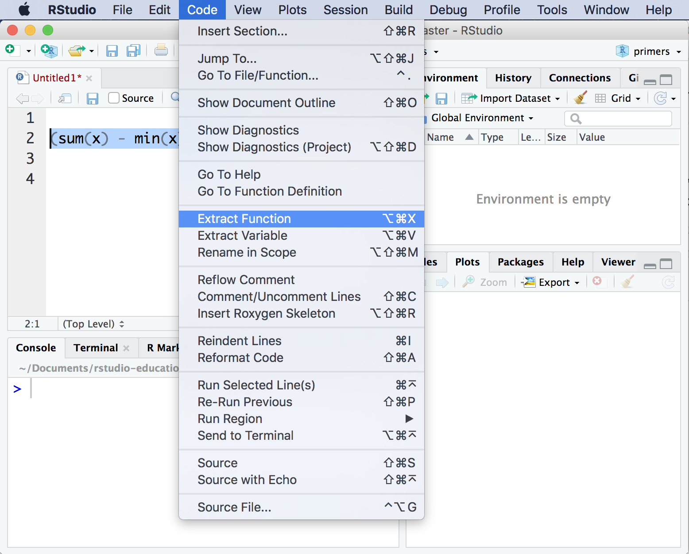

When to write a function
R comes with thousands of functions, and more are written everyday (these are published in R packages). If you want to do something in R, there is a good chance that a function already exists somewhere that does it.
But what if you want to do something new in R, something that doesn’t yet have a function? What should you do?
Write a function?
No, silly. Write some code. But what if you want to use that code over and over again, as if it were a part of R? Then what should you do?
Write a function!
This tutorial will show you how. Take the quiz below to begin.
Quiz
Suppose you need to run the following code on 20 different objects,
sqrt(sum(x^2)).
Workflow
How should you turn your code into functions? Always follow these four steps:
- Create a real R object (or set of objects) to use with your function
- Write code that works with the real object(s)
- Wrap the code in
function() - Assign the names of your real objects as argument names to the function
These steps are the best practice for writing functions in R. When you follow these steps, your functions are guaranteed to work for at least one case, which means you will spend more time using your functions and less time debugging them.
Let’s use the steps to create your first function.
Goal - Grading
To make this real, put yourself in the shoes of a teacher:
You’ve given your students 10 homework assignments and announced that you will drop their lowest homework score. Their final grade will be the average score of the remaining homeworks.
To make your life easier, you want to write an R function that will take a vector of 10 homework scores and return a final grade.
Ready to begin?
Remember our steps:
- Create a real R object (or set of objects) to use with your function
- Create an object named
xthat contains the vectorc(100, 100, 100, 100, 100, 100, 100, 100, 100, 90)(hint: use copy and paste!). Then click Submit Answer.xwill be the grades of your test student.
x <- c(100, 100, 100, 100, 100, 100, 100, 100, 100, 90)- Write code that works with the real object(s)
Recall the grading scheme: the final grade is the average homework score after you drop the lowest score. Since there are many ways to calculate this, let’s be specific and end up on the same page.
- Use
sum(),min(),/,9and parentheses to calculate the final grade for studentx. Click Submit Answer to check that your code works.
x"Your code should return 100."(sum(x) - min(x)) / 9- Wrap the code in
function()
The function() function builds a function from a piece
of R code. To use it, call function() followed by an
opening brace, {. Then write one or more lines of R code
followed by a closed brace, }, e.g.
foo <- function() {
a <- 1
b <- 2
a + b
}function() will return a function that uses everything
between the braces as its code body. If you’d like to save the function,
you’ll need to assign it in the usual way to an R object that you can
call later.
As you write your functions, recall that R will only return the result of the last line in the code body when you call the function (we’ll learn about some exceptions to this rule in the Control Flow tutorial).
Once you save a function, you can run it and inspect its contents.
foo()## [1] 3foo## function() {
## a <- 1
## b <- 2
## a + b
## }
## <environment: 0x11f1f7c30>Your turn
Let’s save your code as a function.
- Save the code below as a function named
grade. Then click Submit Answer.
(sum(x) - min(x)) / 9"Use the function() {} function."grade <- function() {
(sum(x) - min(x)) / 9
}At the moment, your grade() function is reusable but not
generalizable. Each time you call grade() it
computes the final grade of the vector x that contains
c(100, 100, 100, 100, 100, 100, 100, 100, 100, 90).
grade()## [1] 100grade()## [1] 100We’d like to use grade() with new vectors that have new
values.
Arguments
- Assign the names of your real objects as argument names to the function
You can make a function generalizable by turning some of the objects in its code body into formal arguments. A formal argument is an object that a user can assign a value to when he or she calls the function. The function will use the user’s value for the object when it executes its code body.
For example, we’d like to tell R that x in
grade() is an argument. R shouldn’t use a pre-defined value
for x; it should let the user supply a new value for
x each time he or she runs the function.
grade <- function() {
(sum(x) - min(x)) / 9
}How do you tell R that an object is a formal argument?
You list the name of the object in the parentheses that follow
function() in the function definition. If you make more
than one argument, separate their names with a comma. For example, you
could make a and b arguments of my
foo function.
foo <- function(a, b) {
a + b
}Now I can define a new value for a and b
each time I call foo.
foo(a = 1, b = 1)## [1] 2foo(a = 100, b = 200)## [1] 300Default values
To give an argument a default value, set it equal to a value when you
define the function. For example, the code below will set the default
value of b in foo to one.
foo <- function(a, b = 1) {
a + b
}
foo(a = 2)## [1] 3foo(a = 2, b = 2)## [1] 4Interesting, huh? Now apply what you’ve learned to
grade().
- Change the code below to list
xas a formal argument ofgrade(). Then click Submit Answer.
grade <- function() {
(sum(x) - min(x)) / 9
}grade <- function(x) {
(sum(x) - min(x)) / 9
}Good job! You can now have a finished grade() function
that you can use to calculate the final grade of any vector (I
mean, student). Try it out.
- Calculate the final grade of the vector
c(100, 90, 90, 90, 90, 90, 90, 90, 90, 80). Then click Submit Answer.
grade(x = c(100, 90, 90, 90, 90, 90, 90, 90, 90, 80))Quiz
## Error in `question()`:
## ! Arguments in `...` must be passed by position, not name.
## ✖ Problematic argument:
## • allow_rety = TRUERecap
Use the four step workflow whenever you need to write a function:
- Create a real R object (or set of objects) to use with your function
- Write code that works with the real object(s)
- Wrap the code in
function() - Assign the names of your real objects as argument names to the function
Function look-alikes
As an R user, you may have already made things that resemble functions.
Here are two examples that may be familiar. In each case, you can easily convert your code into a function.
Purrr expressions
In the Iteration primer, you learned that purrr’s map functions can
take “expressions.” Expressions are a pieces of code that are
preceded by ~ and include .xs. Map will apply
expressions iteratively to each element of a vector.
For example, this call to map() will apply the
expression ~.x^2 to each element of vec. On
each iteration, map() will assign the _i_th element of vec
to .x and run the expression.
library(tidyverse)
vec <- c(1, 2, 3)
map(vec, ~.x^2)## [[1]]
## [1] 1
##
## [[2]]
## [1] 4
##
## [[3]]
## [1] 9In other words, purrr’s map expressions work like functions that have
.x as a formal argument. To transform an expression to a
function, remove the ~, wrap the code in
function() and list .x as a formal
argument.
sq <- function(.x) {
.x^2
}
map(vec, sq)## [[1]]
## [1] 1
##
## [[2]]
## [1] 4
##
## [[3]]
## [1] 9Functions and pipes
It is also easy to use pipes like simple functions because you can copy and paste a pipe behind different objects. For example, this pipe would compute sum of squares of any vector that you place it behind.
c(1, 1, 1) %>%
sq() %>%
sum()## [1] 3c(1, 2, 3, 4, 5) %>%
sq() %>%
sum()## [1] 55It is a good idea to turn a pipe into a function when you find yourself using it often. You don’t need to rewrite the pipe to do this. Pipes come with a handy shortcut for turning them into functions.
To turn a pipe into a function, replace its initial object with a
., and then save the pipe to an object. R will treat the
object as a function that passes its argument to the beginning of the
pipe.
l2_pipe <- . %>%
sq() %>%
sum()
l2_pipe(c(1, 1, 1))## [1] 3Extract function
There is one final way to generate a function. You can use the Extract Function feature of the RStudio IDE to turn a piece of code into a function.
To do so, highlight a section of code in the scripts pane. Then
navigate to Code > Extract Function in the RStudio
menu bar. RStudio will prompt you to type in a name for the function. It
will then surround your code with function(), making an
educated guess about which objects to list as formal arguments.

Practice
Congratulations on finishing the tutorial. Before you go, complete the following exercises to cement your skills!
Exercise 1
Exercise 2
What will the following code return?
f <- function(a, b, c) {
a
b
c
}
f(1, 2, 3)Exercise 3
Let’s write a function that grades by counting a student’s highest score twice and then taking an average of the 11 scores.
## Error in question("Do you have a test vector that you can use?", answer("Test vector? We don't need no stinking test vector.", : At least one correct answer must be suppliedExercise 4
- Write a piece of code that uses
max()to double count the highest score inxand then takes the average of the 11 results. Click Submit Answer to check that your code works.
x"Your code should retrun the answer 99.09091."(sum(x) + max(x)) / 11Exercise 5
- Wrap your code in
function()and save it to the namegrade2. - Then define the argument(s) for the function.
- Then click Submit Answer.
(sum(x) + max(x)) / 11"When you use this workflow, the names of the argument(s) are always the names of the object(s) that you created in step 1."grade2 <- function(x) {
(sum(x) + max(x)) / 11
}Exercise 6
It’s time to put it all together.
- Use the code block below to develop a function named
l2that calculates the Euclidean distance, or L2 norm (\(\|x||_{2}\)), of a vector of numbers namedx. The L2 norm is the square root of the sum of the squared values in the vector, i.e.
\[\| x \|_{2} = \sqrt{\sum_{i = 1}^{n} x_{i}^{2}}\]
- When you are finished, reduce your code to just the definition of your function. Then click Submit Answer.
"You've already seen the code for the l2 function earlier in this tutorial (I do not mean the pipe example).""Consider using sqrt(), sum(), and ^2. Your code will work with vectors of any length."l2 <- function(x) {
sqrt(sum(x^2))
}